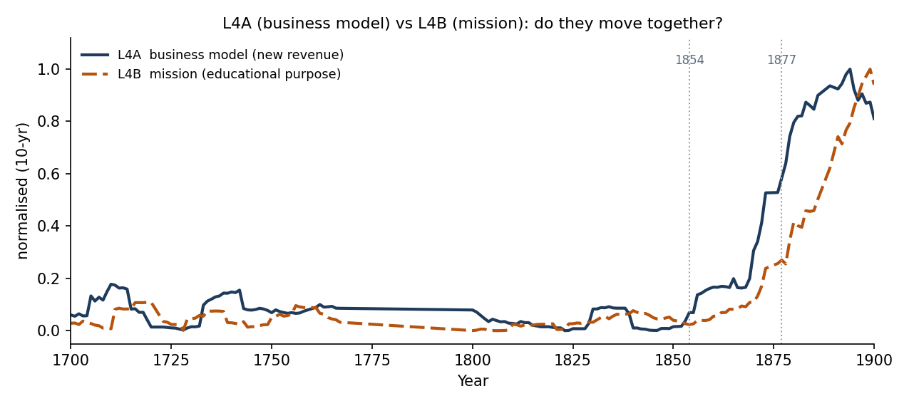
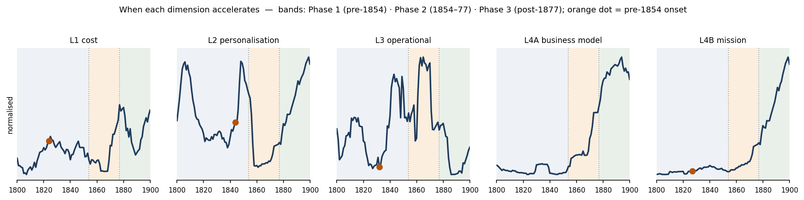
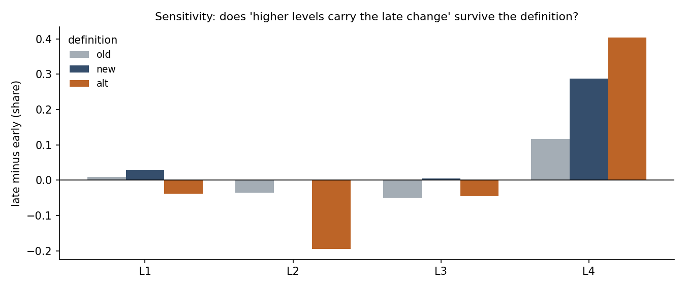

This week had two priorities: finalising the conceptual mapping between the Oxford archive and the Four-Level Framework, and producing stronger empirical evidence for the transformation story. This note reports both, and states where the work still needs to improve.
The evidence base is the full Oxford ledger corpus, 1700–1900 (1,581
extracted pages; entry-level rows tagged by economic category and direction). All money is
deflated to constant pounds (Phelps–Brown–Hopkins index), so changes are real, not
price-driven. Each L1–L4 series is an annual income- or expenditure-share built
from one proxy fixed in advance in the coding protocol. Dating uses a Welch-t
change-point; reform effects use an interrupted time series (segmented OLS, HAC errors) with
breaks at the 1854 and 1877 reforms. Every number below is
reproduced by analysis_v14.py.
Scope of the claim: Oxford is one institution that survived, so the evidence speaks to the timing and concentration of change—which levels move, and when—not to a counterfactual test of survival.
The project is not ultimately about Oxford. It is about how organisations respond when a technology fundamentally changes their environment. Oxford is useful because the Industrial Revolution has already run its full course, while AI transformation is still unfolding, so a completed case can offer lessons for an unfinished one. The question is which kinds of transformation actually matter when the environment changes.
The working hypothesis is that the lower levels, automation and personalisation, help an organisation improve, while the higher levels, operational innovation and business-model innovation, are what let it stay relevant through a major disruption. This remains a hypothesis. This week's task was to make the measures defensible and the evidence strong enough to test it.
The first priority was the conceptual mapping. Our earlier measures had been attached to the framework after the fact, so we rebuilt each one around a single rule. For every historical proxy we answer four questions: what is the original AI definition, what is the historical analogue in the ledger, what evidence supports the mapping, and, most importantly, what evidence would force us to reject it. A construct we cannot imagine rejecting is a label, not a measurement. The table records the definition, the proxy, and the rejection rule for each level.
| Level | Original AI definition (Q1) | Oxford proxy (Q2) | What would reject it (Q4) |
|---|---|---|---|
| L1 Automation | The same activity performed more efficiently; substitution without redesign. Value: cost. | Routine upkeep that always existed: maintenance, domestic service, provisioning. | If it redesigned the workflow (then L3), created new revenue (L4A), or followed a purpose shift (L4B). |
| L2 Personalisation | Different outputs to individuals, within an unchanged process. Value: revenue. | Provision by named individual: scholarships, exhibitions, prizes, individual fees. | If it required workflow redesign (L3), or became a new fee market (L4A). |
| L3 Operational innovation | The workflow itself is redesigned; roles move from doing to coordinating. Value: process. | Administration plus accounting-structure formalisation: more managed accounts, sub-totals, double-entry. | If it is only more clerks doing the same thing (L1 headcount), or merely cosmetic structure. |
| L4A Business model | A genuinely new business that did not exist before. Value: new markets. | Income absent in 1700: securities investment (consols, canal, railway) and fee income, with a first-appearance check. | If the "new" income is relabelled old rent or interest, or is internally funded with no market (then L4B). |
| L4B Mission | A shift in the institution's purpose. No direct AI counterpart. Value: relevance. | Educational expenditure, scientific instruction, scholarship systems. | If it is only scaling an old function (volume, not purpose), or really a revenue play (L4A). |
We then ran concrete historical categories through the same four questions, not only the abstract levels, as the gas-lighting example asks.
| Historical item | Level | Why it qualifies | What would re-classify it |
|---|---|---|---|
| Gas lighting | L1 | Lighting existed; purpose unchanged; only the means improved. | If it changed how teaching was delivered (L3), or was sold on (L4A). |
| Waterworks | L1 | Same need, supplied more efficiently. | If it enabled a new service the college charged for (L4A). |
| Property insurance | L1 | An existing risk handled more efficiently. | If underwriting became a revenue activity (L4A). |
| Externalised services | L1 | Same task, cheaper provider, process unchanged. | If outsourcing redesigned the workflow (L3). |
| Scholarships, exhibitions, prizes | L2 | Provision differs by named individual. | If they reorganised teaching (L3), or were a fee market (L4A). |
| Administration and double-entry | L3 | The operating model itself is restructured. | If it is only more clerks doing the same thing (L1). |
| Examination system | L3 / L4A | Redesigns assessment and coordination. | Its fees are L4A; its process redesign is L3, so we split it. |
| Consols, canal, railway investment | L4A | The college becomes an investor, a business absent in 1700. | If the income is recategorised old interest or rent. |
| Composition and tuition fees | L4A | Education sold as a paid service. | If purely internal support with no market, it leans L4B. |
| Educational expansion, scientific chairs | L4B | The institution's purpose shifts toward teaching and science. | If it is a revenue play (L4A), or just scaling an old function. |
| Land-rent income, financial slack | enabler | A precondition that funds higher-order change. | Outside L1 to L4 by construction. |
The last row addresses the question of resource slack. Slack, meaning land-rent income and a diversified revenue base, is not a kind of transformation but a precondition that makes higher-order change affordable. We therefore place it outside the four levels, as an enabling mechanism, which keeps "what changed" separate from "what made change possible."
The most important conceptual issue was Level 4. It contained two different ideas, so we split them and measured each separately.
| L4A: Business-model innovation | L4B: Mission transformation |
|---|---|
| New revenue streams, fee-based education, investment income, canal, railway, and financial investments, and other new ways of capturing value. | Educational expansion, scientific instruction, scholarship systems, change in the educational portfolio, and shifts in the institution's purpose. |
We then tested the three questions: do they move together, does one appear earlier, and does one drive the other.
They do not move together tightly: their year-to-year movements correlate only 0.26. One is clearly earlier, with the business model turning first, around 1876, and the mission following around 1889. The lead also runs in one direction. To check that this does not depend on a single smoothing choice, we ran the lead–lag test three ways — on the levels, on raw yearly changes, and on smoothed changes. All three place the business model ahead by the same eight years.
| Lead–lag, run three ways | L4A leads by | peak corr. | same-year corr. |
|---|---|---|---|
| Levels (trended) | 8 yrs | 0.76 | 0.67 |
| Raw year-to-year changes | 8 yrs | 0.38 | 0.03 |
| Smoothed changes | 8 yrs | 0.36 | 0.26 |
The change-points point the same way (1876 against 1889, a thirteen-year gap). The direction — business model first — is therefore well supported, though the exact gap of eight to thirteen years should be read as approximate. The result confirms that the two belong apart, and the order is itself informative.
Oxford first found new ways to earn, and only afterward expanded what it was for.
On rigour: both series are short, and the smoothed versions are autocorrelated, which can inflate a lead–lag peak. We therefore rely on the agreement across the three transforms and the independent change-points, and treat a formal causal (Granger-type) test as the next step before this becomes a headline claim.

You asked three questions: which dimensions begin moving before 1854, which only accelerate after 1854, and which accelerate again after 1877. Because the questions are about acceleration, we measure each dimension by its trend (slope) within three windows — before 1854, between the Acts (1854–77), and after 1877 — rather than by a one-off level jump. A rising, statistically clear slope in a window means the dimension is accelerating in that phase.
| Dimension | Pre-1854 trend | 1854–77 trend | Post-1877 trend | Accelerates in |
|---|---|---|---|---|
| L1 cost | −0.16 (n.s.) | +0.54 (n.s.) | −0.04 (n.s.) | — (no clear phase) |
| L2 personalisation | +0.81 | +0.17 | +0.93 | Phase 1 & Phase 3 |
| L3 operational | +0.55 | +0.06 (n.s.) | −0.37 | Phase 1, then fades |
| L4A business model | −0.02 (n.s.) | +0.98 | −0.14 (n.s.) | Phase 2 (1854–77) |
| L4B mission | +0.04 (n.s.) | +0.26 | +0.99 | Phase 3 (post-1877) |
Trend = change in the income/expenditure share per year (×100), from an OLS fit within each window; bold = statistically clear (|t| ≥ 2), "n.s." = not significant.
This answers the three questions directly:
The L2 and L3 shapes are not just noise. Each one follows from what the measure counts.
Operational innovation (L3) is the share spent on administration — the cost of running the college. It rises towards the reforms, peaks around 1854–77, then falls as a share after 1877. The fall is not a retreat. In real money, administrative spending more than doubles into 1854–77 (about £545 to £1,150 a year), so the college genuinely rebuilds how it is run. After that the administration stays about the same size while the business model and the mission grow much faster, so its share goes down even though the activity does not. This is what a one-off reorganisation looks like: a build-up at the reforms, then a smaller share once it is done. That is why we read L3 as the college settling its new structure, not as steady growth.
Personalisation (L2) is money given to named individuals: scholarships, exhibitions, and prizes. Its path is a U. Award spending is high early, almost disappears during the reform decades (the award share falls from about 18% before 1854 to under 2% in 1854–77), then climbs back to about 14% after 1877. The dip and recovery match the old award system being replaced by the modern, competitive scholarship system: support for individuals shrinks while the rules are rewritten, then grows again once the new system is in place. So the late rise is not new personalisation; it is the old kind returning in a reformed form.
So the three phases are real, but they are cleaner when read as acceleration rather than as a single step. The order is the important part: the business model accelerates first, between the Acts, and the mission accelerates afterward. This is the same sequence the lead–lag test found in Section 3 — new ways of earning come before the expansion of purpose — and the two analyses now reinforce each other. The reforms confirmed and scaled changes that were already under way rather than starting them.

This test decides how much to trust the result. We computed each level three ways — old, new, and an alternative — and re-checked three conclusions: does the level carry the late change, does it respond to the reforms, and does it have a pre-1854 precursor.
The Level 4 conclusions hold. Under every definition the top level grows late, responds strongly to 1877, and already turns in the late 1820s.
| L4 definition | late minus early | reform response (1877) | precursor year |
|---|---|---|---|
| old: educational spend | +0.12 | 1.25 | 1827 |
| new: new revenue (L4A) | +0.29 | 1.34 | 1826 |
| alternative: L4A plus L4B | +0.40 | 1.33 | 1827 |
The central claim therefore does not depend on how we measure Level 4. The exception is Level 3, the operating model, which is definition-sensitive: the old salary measure shows a strong reform response, the new administrative measure does not, and whether Level 3 carries the late change changes sign between definitions. We report this openly. The lower levels show no consistent late concentration under any definition.

The hypothesis is that the lower levels (automation and personalisation) help an organisation improve, while the higher levels (operational and business-model innovation) are what let it stay relevant through disruption. We cannot test this on outcomes, because Oxford is a single institution that survived. What we can test is simpler: if the higher levels are what carry an organisation through disruption, the lasting change late in the period should sit in those levels, and it should hold whichever reasonable definition we use. Reading the results level by level:
So the evidence supports the hypothesis clearly for Level 4, more tentatively for Level 3, and not at all for the lower levels.
One limit is worth stating plainly. Oxford is a single institution, and it survived. We can therefore show which changes happened and when, but not that the higher-level changes are what caused the survival. To show cause we would need a comparable institution that skipped those changes and failed, which we do not have. The evidence fits the hypothesis and makes it credible; it does not prove it.
Even so, the pattern carries a clear lesson for organisations facing AI today. Efficiency and personalisation were not where lasting adaptation came from. The institution that stayed relevant changed how it operated and what business it was in, and it began doing so quietly, long before the reforms forced the issue.